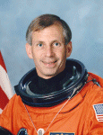

Lyndon B. Johnson Space Center
Houston, Texas 77058
|
National Aeronautics and Space Administration Lyndon B. Johnson Space Center Houston, Texas 77058 |
 |
Biographical Data |
||
KENNETH D. COCKRELL (CAPTAIN, U.S. NAVY, RET.)
NASA Research Pilot
Johnson Space Center
PERSONAL DATA: Born April 9, 1950, in Austin, Texas, but considers Rockdale, Texas, his hometown. He has two children and enjoys sport flying, snow skiing and water skiing.
EDUCATION: Graduated from Rockdale High School, Rockdale, Texas, in 1968; received a Bachelor of Science Degree in Mechanical Engineering from the University of Texas in 1972 and a Master of Science Degree in Aeronautical Systems from the University of West Florida in 1974.
ORGANIZATIONS: Member, Society of Experimental Test Pilots (SETP) and Association of Space Explorers (ASE).
SPECIAL HONORS: Awarded the Armed Forces Meritorious Service Medal, the Distinguished Flying Cross, the Navy Commendation Medal, the Armed Forces Expeditionary Medal and the Humanitarian Service Medal. Received the Alcoa Foundation Scholarship upon graduating from high school.
EXPERIENCE: Cockrell received his commission through the Naval Aviation Reserve Officer Candidate Program at Naval Air Station Pensacola, Florida, in December 1972. He was designated a Naval Aviator in August 1974 at Naval Air Station Pensacola. Following type training in the A-7 aircraft, he flew the Corsair II from 1975 to 1978 aboard the USS Midway in the Western Pacific and Indian Oceans. In 1978, he reported to the United States Naval Test Pilot School at Patuxent River, Maryland. After graduation in 1979, he remained at the Naval Air Test Center, conducting a variety of flight tests on the A-4, A-7, F-4 and F/A-18 aircraft through mid-1982. He then reported to Naval Station, San Diego, for duty as a staff officer for the Commander of the USS Ranger and, subsequently, the USS Kitty Hawk Battle Groups. Cockrell was then assigned as a pilot in an operational F/A-18 squadron and made two cruises on the USS Constellation in 1985 and 1987. He resigned his commission in 1987 and accepted a position at the Aircraft Operations Division of the Johnson Space Center. Cockrell retired from the Naval Reserve, with the rank of Captain, in June 1999. He has logged more than 11,000 flying hours and 650 carrier landings.
NASA EXPERIENCE: From November 1987 to July 1990, Cockrell worked as an aerospace engineer and research pilot at Ellington Field, Houston. He was an instructor pilot and functional check pilot in NASA T-38 aircraft. He conducted air sampling and other high altitude research while piloting the WB-57 and was an aircraft commander in the Gulfstream I administrative transport aircraft.
Selected by NASA in January 1990, Cockrell became an astronaut in July 1991. His technical assignments included duties in the Astronaut Office Operations Development Branch, working on landing, rollout, tires and brakes issues; CAPCOM (spacecraft communicator) in Mission Control for ascent and entry; and Astronaut Office representative for Flight Data File, the numerous books of procedures carried aboard shuttle flights. He also served as Assistant to the Chief of the Astronaut Office for shuttle operations and hardware, Chief of the Astronaut Office Operations Development Branch, and Chief of the Astronaut Office. He served 1 year as Director of Operations, Russia, in Star City, Russia, where he served as the liaison between the Astronaut Office and the training organization at the Gagarin Cosmonaut Training Center in Star City. Cockrell then served as the Assistant Director, Flight Crew Operations, for aircraft operations.
A veteran of five spaceflights, Cockrell has logged more than 1,560 hours in space. He served as a mission specialist on STS-56 (April 8 to April 17, 1993); was the pilot on STS-69 (September 7 to September 18, 1995); and was the mission commander on STS-80 (November 19 to December 7, 1996), STS-98 (February 7 to February 20, 2001) and STS-111 (June 5 to June 19, 2002).
In February 2006, Cockrell was reassigned to Flight Crew Operations Aircraft Operations Division (AOD) at Ellington Field as the WB-57 High Altitude Research Program Manager, until 2010. Subsequently, he served as a Shuttle Training Aircraft (STA) instructor pilot, a GIII pilot, C-9 pilot and as a pilot on the Super Guppy transport airplane. He currently serves as the GIII Project Pilot.
SPACE FLIGHT EXPERIENCE: STS-56 Discovery (April 8 to April 17, 1993). STS-56, carrying ATLAS-2, was a 9-day mission, during which the crew conducted atmospheric and solar studies to better understand the effect of solar activity on the Earth’s climate and environment. Mission duration was 9 days, 6 hours, 9 minutes and 21 seconds.
STS-69 Endeavour (September 7 to September 18, 1995). The primary objective of STS-69 was the successful deployment and retrieval of a SPARTAN satellite and the Wake Shield Facility (WSF). The WSF was designed to evaluate the effectiveness of using a free-flying platform to grow semiconductors, high temperature superconductors and other materials using the ultra-high vacuum created behind the spacecraft. Mission duration was 10 days, 20 hours and 28 minutes.
STS-80 Columbia (November 19 to December 7, 1996). During STS-80, the crew deployed and retrieved the WSF and the Orbiting Retrievable Far and Extreme Ultraviolet Spectrometer (ORFEUS) satellites. The ORFEUS instruments, mounted on the reusable Shuttle Pallet Satellite, studied the origin and makeup of stars. Mission duration was 17 days, 15 hours and 53 minutes, a space shuttle record.
STS-98 Atlantis (February 9 to February 20, 2001). The STS-98 crew continued the task of building and enhancing the International Space Station by delivering the U.S. laboratory module Destiny. The shuttle spent 7 days docked to the station while Destiny was attached, and three spacewalks were conducted to complete its assembly. The crew also relocated a docking port and delivered supplies and equipment to the resident Expedition-1 crew. Mission duration was 12 days, 21 hours and 20 minutes. Unacceptable weather conditions in Florida necessitated a landing at Edwards Air Force Base, California.
STS-111 Endeavour (June 5 to June 19, 2002). The STS-111 mission delivered a new ISS resident crew and a Canadian-built mobile base for the orbiting outpost’s robotic arm. The crew also performed late-notice repair of the station’s robot arm by replacing one of the arm’s joints. It was the second space shuttle mission dedicated to delivering research equipment to the space platform. STS-111 also brought home the Expedition-4 crew from their 6-1/2-month stay aboard the station. Mission duration was 13 days, 20 hours and 35 minutes. Unacceptable weather conditions in Florida necessitated a landing at Edwards Air Force Base, California.
JANUARY 2014